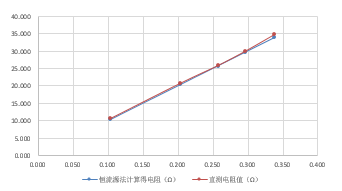

基于TI Tiva-C开发板的高性能嵌入式开发
Energy-efficient embedded development based on TI Tiva-C series processors
原理

恒流源测量电阻的原理

仪表放大器INA333的原理
A1、A2 高输入阻抗同相放大器, A3 为差动放大器。但前面所述的同相放大器的连线方式, 与此处的同相放大器不一样, 此处的同相放大器的反相端的接地电阻 R1 并不直接接地, 而是将两个放大器的反相端通过R1直接相连。
INA333仪用放大器的放大倍数为

仪用放大器特点
- 高共模抑制比
- 小线性误差
高输入阻抗和低噪

实验板实际电路
Δ-Σ型ADC的原理
- Σ-Δ调制技术，其基本概念是利用反馈环来提高粗糙量化器的有效分辨率并整形其量化噪声。
Sigmadelta调制器是给1个Delta调制器的前端加上环路滤波器并把其放入环路中来构成的。在简单情况下，积分器可被用作环路滤波器。因此，Sigmadelta调制器主要是由前端的积分器，1位A/D及反馈环路中的1位D/A来组成。
Δ-Σ型ADC特点
- 分辨率高
- 线性度好
- 成本低

实验板实际电路
实验实现方案
实验结果
电桥+仪用放大器测电阻
实验原始数据
折线化表示

结果分析
从上面的曲线中可以看出，INA输出电压-直接测电阻值-电桥法计算得到的电阻值的曲线有一定的误差，但基本相等，误差在可控范围内。
恒流源+仪用放大器型ADC测电阻
实验原始数据

折线化表示

结果分析
分析：从上面的曲线中可以看出，INA输出电压-直接测电阻值-恒流源法计算得到的电阻值的曲线有一定的误差，但基本相等，误差在可控范围内。
电桥-Δ-Σ型ADC测电阻
实验原始数据
折线化表示
结果分析
分析：从上面的曲线中可以看出，Δ-Σ型ADC输出电压-直接测电阻值-电桥法计算得到的电阻值的曲线有一定的误差，（除过第一个数据误差特别大，可能是因为电阻值太小）但基本相等，误差在可控范围内。
INA输出受Ref的影响
实验原始数据

折线化表示
结果分析
分析：从图像中可以看出，Ref与INA-out在0~2V之间是线性的关系，超过2V之后在一定的范围内保持恒定值，超过2.7V之后下降。
特殊现象分析
实验中出现了一组数据，误差非常之大，数据如下
结论：经分析实验原理电路与相关器件的特性发现电桥–INA法测电阻可以测量电阻范围到500Ω左右，恒流源–INA法测电阻只能测量到50Ω左右，原因是INA对差模信号的放大和共模输入也有很大的关系，共模电压和输出电压的关系如下图

实验总结
- 做电桥法测电阻的实验电阻可以测到可调电阻的最大值500Ω左右，但是恒流源–INA法测电阻时出现了问题，明显实验结果不对，后来经过查询相关器件（INA333）的工作特性解决了问题，并得出了一般性的结论，在这方面比较有收获。
- 通过实验中遇到的问题认识到做实验之前熟悉器件特性的重要性，这样在做实验过程中出现了问题就可以马上解决，节省完成实验的时间。
- 组内合作在实验中也相当重要，遇到问题多个成员便多了不同的解决方案，从组间 成员间学习解决问题的态度和方法，为后来实验可积累不同经验，此项异常重要。
代码实现
参考网页地址